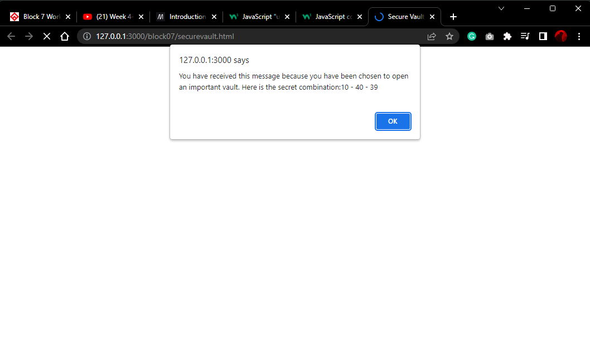

a small collection of my work
The First Assignment

"This was my very first web development assignment; I was tasked with creating a list of five different types of zoo animals and providing interesting facts about each. There were a few diff individual animals to name in each category and there were links provided to read random informative details about the animals characteristics and traits. As you can see it looks very remedial and clunky, this is by far my least favorite thing I've made since the wed development boot-camp began last month!
The Second Assignment

"This was my second assignment from the Fullstack web development boot-camp; here i was tasked with creating a detailed grocery list. There were to be three major catagories of food items. My 3 catagories were: pantry items, frozen foods, and chilled or refrigerated items. Within each of the three main catagories there are two sub-catagories in which to list a few food products under. My sub-catagories were: canned and dry goods, vegetables and snacks, and lastly fruits and deli. I added a single image in each major category representing the items in each. For me although the html document isn't perfect, I feel there was an evident and visible improvement from the first to second assignment. Furthermore, I built a much more solid understanding and foundation of setting up an html document and working with css."
The Third Assignment
"This was my third assignment from the Fullstack web development boot-camp and my very first time using javascript. My task was building a vault that requires three mathematical calculations to generate the three codes in a combination. I used the JavaScript console to create three variables. Each variable will be the result of each calculation (three in total). The combination of the lock is 10 - 40 - 39. I had to use three different arithmetic operators that will generate each individual number, then display the combination on the HTML page, or in an alert popup. The photo here is a screenshot of the alert that comes up after opening up the webpage."